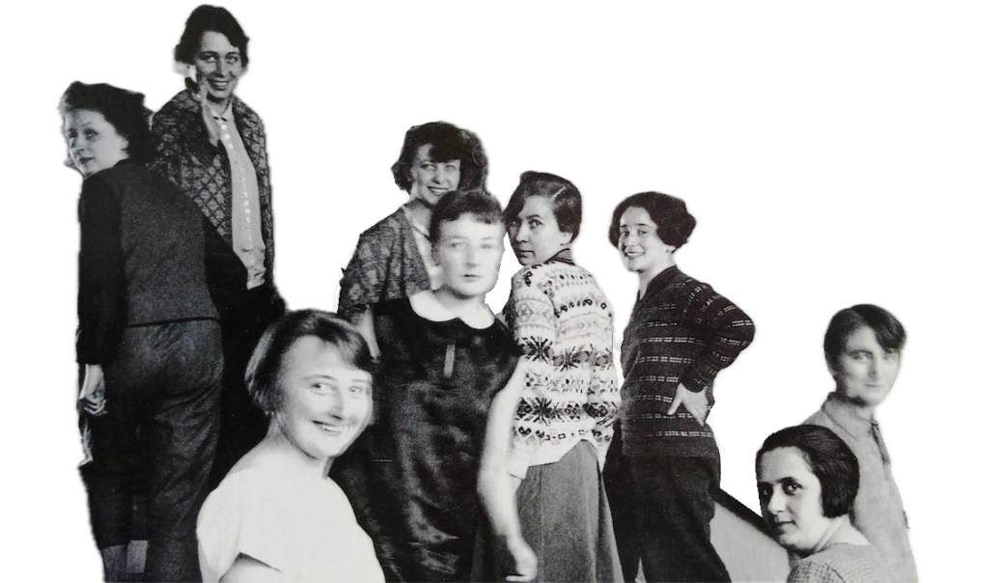

La storia
Tra il 1919 e il 1933, una scuola fondata a Weimar opera conciliazione tra arti ed artigianato in un nuovo linguaggio legato alla produzione industriale, impostando nuovi canoni estetici per l’architettura e il design moderni
I fondatori
La Didattica
Un corso propedeutico, o Vorkurs, inizialmente tenuto dal pittore Johannes Itten puntava a introdurre gli studenti in questo quadro di trasversalità disciplinare, liberandone così la creatività.
Forme e colori primari, superfici e volumi, i materiali e la loro interazione: il percorso del Bauhaus si articolava poi in diversi laboratori che coprivano molteplici aree, dalla pittura e la scultura fino ai tessuti, ai metalli, agli arredi e al design grafico.
